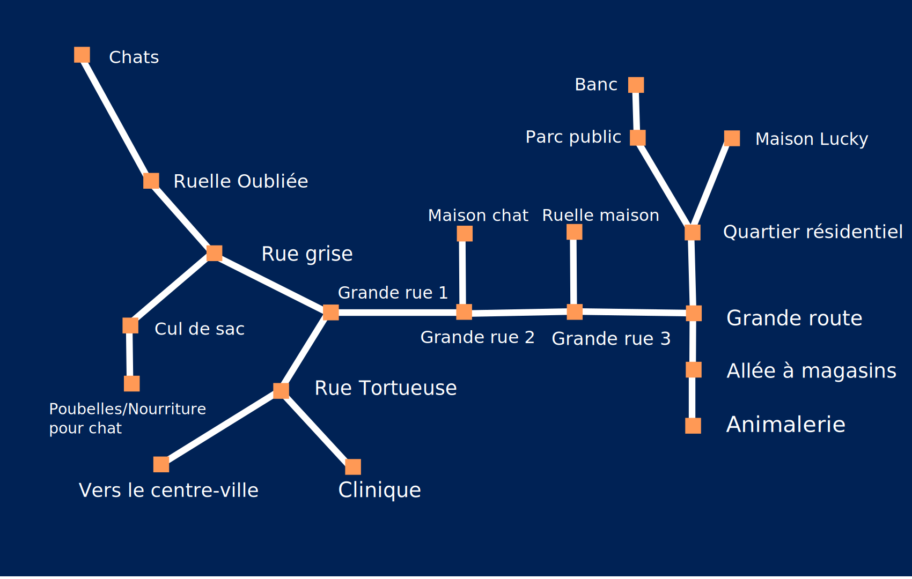

Choisissez "Aller plus loin dans la rue" ou un choix équivalent jusqu'à arriver à la ruelle. Entrez dans l'appartement.
Choisissez "Vérifier le bol de lait sur la fenêtre", puis choisissez "Aller dormir".
"Rêver d'autre chose", puis "S'effondrer, découragée", puis "Regarder autour de soi", puis "Pousser la boule de marbre".
"Que puis-je faire pour toi?", puis "Poursuivre son chemin", puis prendre le seul choix jusqu'à la fin du chapitre.
Voici une carte de la ville dans le chapitre 3:
(Vous pouvez cliquer sur cette image pour l'agrandir)
D'abord, vous devrez aller chercher trois raisons de partir. Pour ça, vous devrez aller à trois endroits qui vous donneront une raison de partir:
Ensuite, vous devrez aller chercher trois raisons de partir. Pour les trouver, allez à ces endroits:
Vous devez ensuite aller chercher les affiches pour les montrer aux chats. Pour ce faire, allez dans la grande rue (2) et choisissez "Prendre toutes les affiches de la rue". Ensuite, retournez vers les chats et choisissez "Montrer les affiches".
Choisir "Ouvrir la porte".